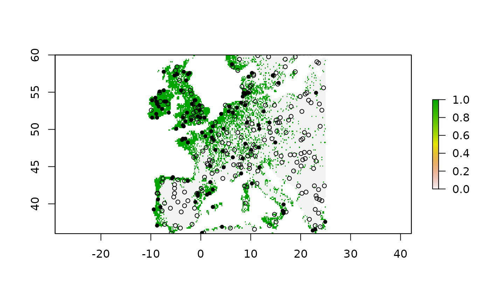

USE_vignette
USE_vignette.RmdIn this vignette we will go trough the USE package.
Sys.setlocale("LC_ALL", "English")
#> Warning in Sys.setlocale("LC_ALL", "English"): OS reports request to set locale
#> to "English" cannot be honored
#> [1] ""
library(USE)
library(raster)
library(virtualspecies)
library(RStoolbox)
#> Warning in fun(libname, pkgname): rgeos: versions of GEOS runtime 3.10.2-CAPI-1.16.0
#> and GEOS at installation 3.9.1-CAPI-1.14.2differ
library(data.table)
library(sf)
myCRS<-"+proj=longlat +datum=WGS84 +ellps=WGS84 +towgs84=0,0,0"Download bioclimatic variables from WorldClim
Worldclim<-raster::getData('worldclim', var='bio', res=10) Crop the bioclimatic variables to the European extent
Create a virtual species. For details about the methodology used, see the vignette of the virtualspecies R package
#create virtual species
myRandNum=sample(1:19,size=5, replace = FALSE)
random.sp <- virtualspecies::generateRandomSp(envData[[myRandNum]],
convert.to.PA = FALSE,
species.type = "additive",
realistic.sp = TRUE,
plot = FALSE)
#reclassify suitability raster using a probability conversion rule
new.pres<-virtualspecies::convertToPA(x=random.sp,
beta=0.55,
alpha = -0.05, plot = FALSE)
#Sample true occurrences
presence.points <- virtualspecies::sampleOccurrences(new.pres,
n = 300, # The number of points to sample
type = "presence-absence",
sample.prevalence = 0.6,
detection.probability = 1,
correct.by.suitability = TRUE,
plot = TRUE) 
Create a presence only data set.
myPres=presence.points$sample.points[which(presence.points$sample.points$Observed==1), c( "x", "y", "Observed")]
coordinates(myPres)<-~x+y
crs(myPres)<-myCRS
myPres
#> class : SpatialPointsDataFrame
#> features : 106
#> extent : -7.916667, 24.91667, 36.08333, 59.91667 (xmin, xmax, ymin, ymax)
#> crs : +proj=longlat +datum=WGS84 +no_defs
#> variables : 1
#> names : Observed
#> min values : 1
#> max values : 1Find the optimal resolution of the sampling grid. First, made a PCA on the whole raster stack and then use the PC-scores of the first two axes to create a new spatial object.
rpc<-rasterPCA(envData,spca = TRUE)
dt <- na.omit(data.table(as.data.frame(rpc$map[[c("PC1", "PC2")]], xy = TRUE)))
dt=st_as_sf(dt, coords = c("PC1", "PC2"))
myRes$Opt_res
#> [1] 6Perform uniform sampling of the environmental space
myObs=USE::uniformSampling(sdf=dt,
grid.res=myRes$Opt_res,
n.tr = 5,
sub.ts = TRUE,
n.ts = 2,
plot_proc = FALSE)
str(myObs)
#> List of 2
#> $ Bkg.tr:Classes 'sf', 'data.table' and 'data.frame': 152 obs. of 4 variables:
#> ..$ x : num [1:152] 8.75 9.25 10.08 8.92 9.42 ...
#> ..$ y : num [1:152] 59.9 59.9 59.9 59.9 59.8 ...
#> ..$ ID : chr [1:152] "25" "28" "33" "26" ...
#> ..$ geometry:sfc_POINT of length 152; first list element: 'XY' num [1:2] -4.04 -2.58
#> ..- attr(*, "sf_column")= chr "geometry"
#> ..- attr(*, "agr")= Factor w/ 3 levels "constant","aggregate",..: NA NA NA
#> .. ..- attr(*, "names")= chr [1:3] "x" "y" "ID"
#> $ Bkg.ts:Classes 'sf', 'data.table' and 'data.frame': 58 obs. of 4 variables:
#> ..$ x : num [1:58] -8.58 -8.58 -8.42 -8.75 -9.75 ...
#> ..$ y : num [1:58] 41.4 41.2 43.2 42.9 51.6 ...
#> ..$ ID : chr [1:58] "15587" "15715" "13984" "14303" ...
#> ..$ geometry:sfc_POINT of length 58; first list element: 'XY' num [1:2] 1.26 6.27
#> ..- attr(*, "sf_column")= chr "geometry"
#> ..- attr(*, "agr")= Factor w/ 3 levels "constant","aggregate",..: NA NA NA
#> .. ..- attr(*, "names")= chr [1:3] "x" "y" "ID"
#background points for the training dataset
myObs$Bkg.tr
#> Simple feature collection with 152 features and 3 fields
#> Geometry type: POINT
#> Dimension: XY
#> Bounding box: xmin: -11.84538 ymin: -3.491445 xmax: 6.260598 ymax: 7.123497
#> CRS: NA
#> First 10 features:
#> x y ID geometry
#> 25 8.750000 59.91667 25 POINT (-4.041346 -2.577969)
#> 28 9.250000 59.91667 28 POINT (-3.741414 -3.044682)
#> 33 10.083333 59.91667 33 POINT (-2.869542 -2.947099)
#> 26 8.916667 59.91667 26 POINT (-3.445481 -2.938089)
#> 134 9.416667 59.75000 134 POINT (-3.270331 -2.84089)
#> 7090 20.750000 50.58333 7090 POINT (-0.4954103 -3.389847)
#> 10435 24.583333 47.25000 10435 POINT (-0.4773481 -2.924775)
#> 1813 23.583333 56.75000 1813 POINT (-1.092767 -3.491445)
#> 3882 18.750000 53.58333 3882 POINT (0.02702374 -3.233211)
#> 2446 22.083333 55.58333 2446 POINT (-1.766941 -2.630861)
#background points for the testing dataset
myObs$Bkg.ts
#> Simple feature collection with 58 features and 3 fields
#> Geometry type: POINT
#> Dimension: XY
#> Bounding box: xmin: -11.01883 ymin: -3.835986 xmax: 6.386018 ymax: 6.675364
#> CRS: NA
#> First 10 features:
#> x y ID geometry
#> 15587 -8.583333 41.41667 15587 POINT (1.257106 6.267118)
#> 15715 -8.583333 41.25000 15715 POINT (1.307622 6.109559)
#> 13984 -8.416667 43.25000 13984 POINT (0.06820822 5.7994)
#> 14303 -8.750000 42.91667 14303 POINT (-0.4827864 6.262874)
#> 5922 -9.750000 51.58333 5922 POINT (-4.086229 6.367474)
#> 6095 -9.750000 51.41667 6095 POINT (-4.028328 6.393714)
#> 1829 -5.750000 56.58333 1829 POINT (-6.889477 6.675364)
#> 2197 -5.583333 55.91667 2197 POINT (-6.636126 6.429048)
#> 18488 3.583333 36.75000 18488 POINT (5.029053 3.902954)
#> 17196 -8.250000 39.08333 17196 POINT (4.89765 3.611034)Uniformly sampling background points in the environmental space, accounting for the species presence points.
myGrid.psAbs <- USE::paSampling(env.rast=envData,
pres=myPres,
thres=0.75,
H=NULL,
grid.res=as.numeric(myRes$Opt_res),
n.tr = 5,
prev=0.3,
sub.ts=TRUE,
n.ts=5,
plot_proc=FALSE,
verbose=FALSE)
#> Warning: [vect] argument 'crs' should be a character value
#> Warning: [vect] argument 'crs' should be a character value
str(myGrid.psAbs)
#> List of 2
#> $ Bkg.tr:Classes 'sf' and 'data.frame': 378 obs. of 27 variables:
#> ..$ KDE : num [1:378] 0.003485 0.000605 0.000352 0.000631 0.000499 ...
#> ..$ myID : num [1:378] 352 350 125 351 348 ...
#> ..$ PA : num [1:378] 0 0 0 0 0 0 0 0 0 0 ...
#> ..$ percP : chr [1:378] "out" "out" "out" "out" ...
#> ..$ x : num [1:378] 9.58 9.25 8.75 9.42 8.92 ...
#> ..$ y : num [1:378] 59.8 59.8 59.9 59.8 59.8 ...
#> ..$ bio1 : int [1:378] 38 25 13 27 18 51 16 35 46 51 ...
#> ..$ bio2 : int [1:378] 72 73 75 73 73 82 76 76 69 72 ...
#> ..$ bio3 : int [1:378] 25 26 27 26 26 27 26 26 24 25 ...
#> ..$ bio4 : int [1:378] 7389 7183 7053 7300 7051 7529 7328 7619 7597 7304 ...
#> ..$ bio5 : int [1:378] 191 176 164 180 168 201 171 193 199 200 ...
#> ..$ bio6 : int [1:378] -90 -102 -112 -100 -106 -95 -113 -98 -85 -78 ...
#> ..$ bio7 : int [1:378] 281 278 276 280 274 296 284 291 284 278 ...
#> ..$ bio8 : int [1:378] 92 109 66 113 71 143 101 123 99 103 ...
#> ..$ bio9 : int [1:378] -18 -31 -42 -29 -37 -41 -40 -21 -13 -8 ...
#> ..$ bio10 : int [1:378] 135 119 106 123 111 143 112 134 146 147 ...
#> ..$ bio11 : int [1:378] -56 -66 -76 -65 -70 -51 -77 -62 -50 -41 ...
#> ..$ bio12 : int [1:378] 772 817 844 806 839 845 820 756 798 731 ...
#> ..$ bio13 : int [1:378] 95 101 103 99 103 114 102 95 90 83 ...
#> ..$ bio14 : int [1:378] 38 41 41 41 41 46 41 37 41 36 ...
#> ..$ bio15 : int [1:378] 28 28 27 27 28 33 28 29 26 27 ...
#> ..$ bio16 : int [1:378] 261 273 282 269 281 315 277 258 261 238 ...
#> ..$ bio17 : int [1:378] 124 131 134 130 133 146 130 119 132 119 ...
#> ..$ bio18 : int [1:378] 243 258 264 255 262 315 265 245 246 225 ...
#> ..$ bio19 : int [1:378] 145 159 171 155 167 159 158 140 156 143 ...
#> ..$ ID : chr [1:378] "68" "66" "19" "67" ...
#> ..$ geometry:sfc_POINT of length 378; first list element: 'XY' num [1:2] -2.7 -2.7
#> ..- attr(*, "sf_column")= chr "geometry"
#> ..- attr(*, "agr")= Factor w/ 3 levels "constant","aggregate",..: NA NA NA NA NA NA NA NA NA NA ...
#> .. ..- attr(*, "names")= chr [1:26] "KDE" "myID" "PA" "percP" ...
#> $ Bkg.ts:Classes 'sf' and 'data.frame': 230 obs. of 27 variables:
#> ..$ KDE : num [1:230] 0.001136 0.000962 0.000729 0.000692 0.001663 ...
#> ..$ myID : num [1:230] 27054 23107 23106 24220 23112 ...
#> ..$ PA : num [1:230] 0 0 0 0 0 0 0 0 0 0 ...
#> ..$ percP : chr [1:230] "out" "out" "out" "out" ...
#> ..$ x : num [1:230] 19.92 -8.92 -9.08 -8.42 -8.08 ...
#> ..$ y : num [1:230] 39.8 42.6 42.6 41.8 42.6 ...
#> ..$ bio1 : int [1:230] 151 142 146 137 119 123 129 131 115 124 ...
#> ..$ bio2 : int [1:230] 93 61 59 88 85 85 68 79 86 87 ...
#> ..$ bio3 : int [1:230] 36 38 39 41 40 39 39 40 39 40 ...
#> ..$ bio4 : int [1:230] 5722 3414 3312 4297 4352 4514 3584 4035 4568 4556 ...
#> ..$ bio5 : int [1:230] 296 229 229 255 239 244 228 239 238 247 ...
#> ..$ bio6 : int [1:230] 38 72 78 44 27 29 54 46 22 30 ...
#> ..$ bio7 : int [1:230] 258 157 151 211 212 215 174 193 216 217 ...
#> ..$ bio8 : int [1:230] 96 108 113 90 71 74 94 88 66 75 ...
#> ..$ bio9 : int [1:230] 227 185 188 192 176 182 174 183 174 183 ...
#> ..$ bio10 : int [1:230] 227 187 190 193 177 182 178 184 175 184 ...
#> ..$ bio11 : int [1:230] 82 100 105 83 67 68 86 81 59 68 ...
#> ..$ bio12 : int [1:230] 1250 1219 1142 1320 1345 1396 1261 1467 1460 1375 ...
#> ..$ bio13 : int [1:230] 208 175 161 186 197 210 177 217 206 202 ...
#> ..$ bio14 : int [1:230] 15 29 26 19 34 30 36 25 27 27 ...
#> ..$ bio15 : int [1:230] 64 45 45 50 44 47 41 50 49 48 ...
#> ..$ bio16 : int [1:230] 581 486 457 523 512 543 487 586 573 536 ...
#> ..$ bio17 : int [1:230] 61 119 111 98 135 128 140 114 123 121 ...
#> ..$ bio18 : int [1:230] 61 142 135 114 148 139 163 130 132 131 ...
#> ..$ bio19 : int [1:230] 527 442 409 519 498 532 445 585 569 526 ...
#> ..$ ID : chr [1:230] "6539" "5063" "5062" "5472" ...
#> ..$ geometry:sfc_POINT of length 230; first list element: 'XY' num [1:2] 2.1 5.62
#> ..- attr(*, "sf_column")= chr "geometry"
#> ..- attr(*, "agr")= Factor w/ 3 levels "constant","aggregate",..: NA NA NA NA NA NA NA NA NA NA ...
#> .. ..- attr(*, "names")= chr [1:26] "KDE" "myID" "PA" "percP" ...
#background points for the training dataset
myGrid.psAbs$Bkg.tr
#> Simple feature collection with 378 features and 26 fields
#> Geometry type: POINT
#> Dimension: XY
#> Bounding box: xmin: -13.58791 ymin: -4.256078 xmax: 6.872754 ymax: 7.500397
#> CRS: NA
#> First 10 features:
#> KDE myID PA percP x y bio1 bio2 bio3 bio4 bio5
#> 68 0.0034854319 352 0 out 9.583333 59.75000 38 72 25 7389 191
#> 66 0.0006048808 350 0 out 9.250000 59.75000 25 73 26 7183 176
#> 19 0.0003518053 125 0 out 8.750000 59.91667 13 75 27 7053 164
#> 67 0.0006311931 351 0 out 9.416667 59.75000 27 73 26 7300 180
#> 65 0.0004986511 348 0 out 8.916667 59.75000 18 73 26 7051 168
#> 2283 0.0029962382 14638 0 out 22.583333 49.08333 51 82 27 7529 201
#> 20 0.0003799395 128 0 out 9.250000 59.91667 16 76 26 7328 171
#> 21 0.0011658064 130 0 out 9.583333 59.91667 35 76 26 7619 193
#> 30 0.0048266103 142 0 out 11.583333 59.91667 46 69 24 7597 199
#> 158 0.0117269891 814 0 out 12.583333 59.41667 51 72 25 7304 200
#> bio6 bio7 bio8 bio9 bio10 bio11 bio12 bio13 bio14 bio15 bio16 bio17 bio18
#> 68 -90 281 92 -18 135 -56 772 95 38 28 261 124 243
#> 66 -102 278 109 -31 119 -66 817 101 41 28 273 131 258
#> 19 -112 276 66 -42 106 -76 844 103 41 27 282 134 264
#> 67 -100 280 113 -29 123 -65 806 99 41 27 269 130 255
#> 65 -106 274 71 -37 111 -70 839 103 41 28 281 133 262
#> 2283 -95 296 143 -41 143 -51 845 114 46 33 315 146 315
#> 20 -113 284 101 -40 112 -77 820 102 41 28 277 130 265
#> 21 -98 291 123 -21 134 -62 756 95 37 29 258 119 245
#> 30 -85 284 99 -13 146 -50 798 90 41 26 261 132 246
#> 158 -78 278 103 -8 147 -41 731 83 36 27 238 119 225
#> bio19 ID geometry
#> 68 145 68 POINT (-2.696467 -2.695892)
#> 66 159 66 POINT (-3.430072 -2.760282)
#> 19 171 19 POINT (-4.041346 -2.577969)
#> 67 155 67 POINT (-3.270331 -2.84089)
#> 65 167 65 POINT (-3.853077 -2.523284)
#> 2283 159 2283 POINT (-2.890885 -2.57662)
#> 20 158 20 POINT (-3.741414 -3.044682)
#> 21 140 21 POINT (-2.552753 -3.139665)
#> 30 156 30 POINT (-2.562465 -2.663995)
#> 158 143 158 POINT (-1.955669 -2.607403)
#background points for the testing dataset
myGrid.psAbs$Bkg.ts
#> Simple feature collection with 230 features and 26 fields
#> Geometry type: POINT
#> Dimension: XY
#> Bounding box: xmin: -13.2887 ymin: -4.409304 xmax: 6.340094 ymax: 7.139334
#> CRS: NA
#> First 10 features:
#> KDE myID PA percP x y bio1 bio2 bio3 bio4 bio5
#> 6539 0.0011360617 27054 0 out 19.916667 39.75000 151 93 36 5722 296
#> 5063 0.0009620637 23107 0 out -8.916667 42.58333 142 61 38 3414 229
#> 5062 0.0007291183 23106 0 out -9.083333 42.58333 146 59 39 3312 229
#> 5472 0.0006920303 24220 0 out -8.416667 41.75000 137 88 41 4297 255
#> 5068 0.0016633382 23112 0 out -8.083333 42.58333 119 85 40 4352 239
#> 5222 0.0017867435 23555 0 out -8.250000 42.25000 123 85 39 4514 244
#> 4809 0.0017581440 22442 0 out -8.750000 43.08333 129 68 39 3584 228
#> 5407 0.0006715987 23997 0 out -8.583333 41.91667 131 79 40 4035 239
#> 5409 0.0009719302 23999 0 out -8.250000 41.91667 115 86 39 4568 238
#> 5300 0.0022087607 23777 0 out -8.250000 42.08333 124 87 40 4556 247
#> bio6 bio7 bio8 bio9 bio10 bio11 bio12 bio13 bio14 bio15 bio16 bio17 bio18
#> 6539 38 258 96 227 227 82 1250 208 15 64 581 61 61
#> 5063 72 157 108 185 187 100 1219 175 29 45 486 119 142
#> 5062 78 151 113 188 190 105 1142 161 26 45 457 111 135
#> 5472 44 211 90 192 193 83 1320 186 19 50 523 98 114
#> 5068 27 212 71 176 177 67 1345 197 34 44 512 135 148
#> 5222 29 215 74 182 182 68 1396 210 30 47 543 128 139
#> 4809 54 174 94 174 178 86 1261 177 36 41 487 140 163
#> 5407 46 193 88 183 184 81 1467 217 25 50 586 114 130
#> 5409 22 216 66 174 175 59 1460 206 27 49 573 123 132
#> 5300 30 217 75 183 184 68 1375 202 27 48 536 121 131
#> bio19 ID geometry
#> 6539 527 6539 POINT (2.095304 5.620229)
#> 5063 442 5063 POINT (-0.01616488 6.420715)
#> 5062 409 5062 POINT (0.4641462 6.23308)
#> 5472 519 5472 POINT (0.6812513 6.188195)
#> 5068 498 5068 POINT (-0.7331267 5.901779)
#> 5222 532 5222 POINT (-0.6382789 6.180318)
#> 4809 445 4809 POINT (-0.6801149 6.125918)
#> 5407 585 5407 POINT (-0.5705304 7.139334)
#> 5409 569 5409 POINT (-0.9404954 6.246143)
#> 5300 526 5300 POINT (-0.3063358 6.078132)